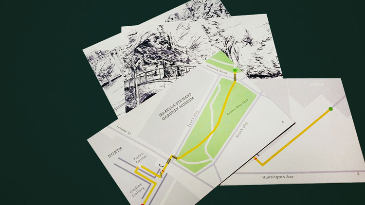
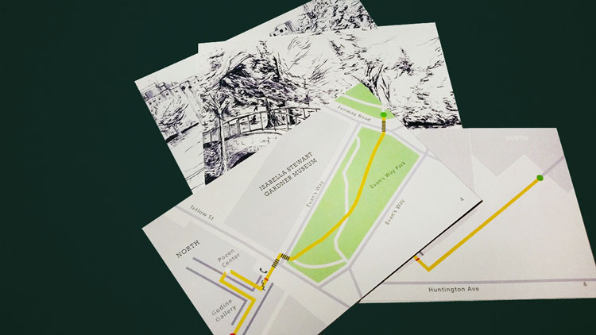
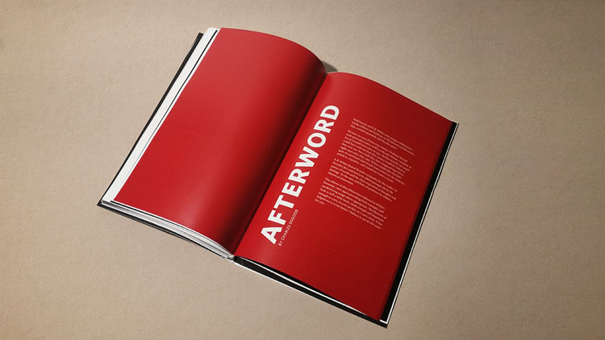
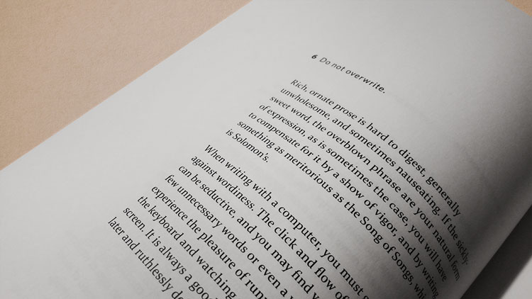
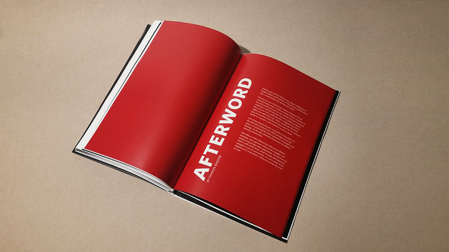
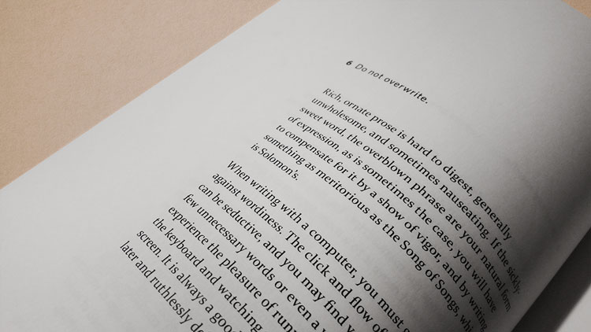
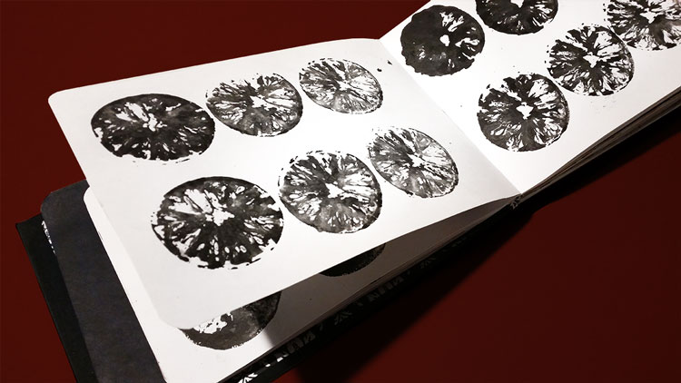
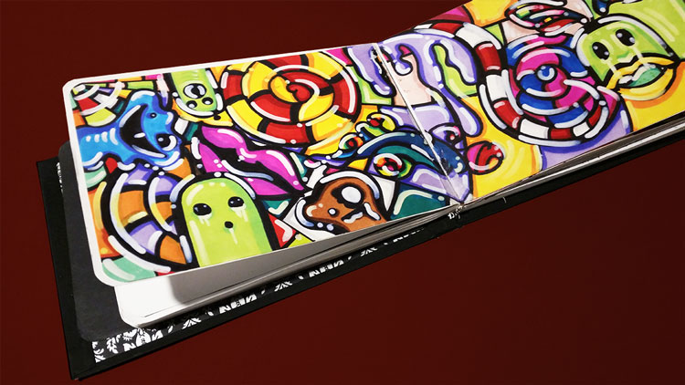
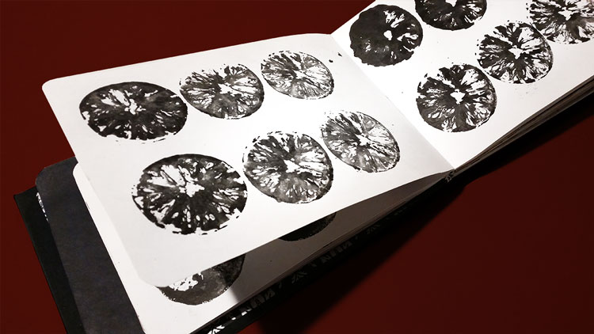
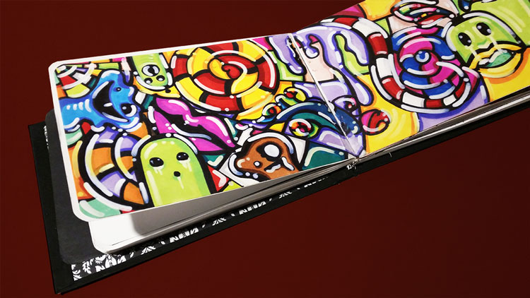

Hey there.
I'm a graphic designer, & I love it!
What I've made
Wayfinding Map
We were given the task to design and execute a map route from the Museum of Fine Arts to MassArt's President Gallery. Assignment for Joseph Quakenbush's Information Architecture I Course. Student work for Massachusetts College of Art & Design.

 

Lemon Recipe Cards
Given a packet of lemon-themed recipes, we were asked to design ten recipe cards and complementary packaging. I explored stamping and scanning lemons as a means of expressing the lemon-themed project. Assignment for Lynn Faitelson's Typography II course
Student work for Massachusetts College of Art & Design.


The Elements of Style
We were asked to redesign the book: The Elements of Style by William Strunk Jr. and E. B. White—A grammar book. Assignment for Lynn Faitelson's Typography II course. Student work for Massachusetts College of Art & Design.
 



Sketchbooks
I explore freely in my sketchbooks, acquiring a variety of marks, stamps, organic forms, and anything else I can collect as a form of inspiration.
 


